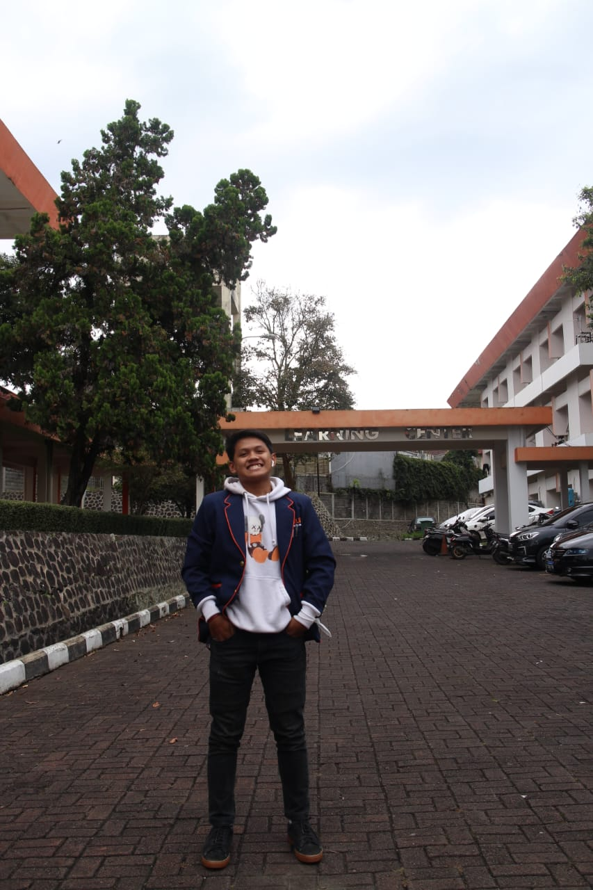

Tentang Saya

Halo! Saya Wafid Adzka Haifan Mukhayyar, mahasiswa semester 6 D4 Teknik Informatika di ULBI (Universitas Logistik & Bisnis Internasional), Bandung. Saya memiliki passion dalam Frontend Development, UI/UX, dan software engineering.
Biodata Pribadi
- Nama: Wafid Adzka Haifan Mukhayyar
- Tempat, Tanggal Lahir: Purwakarta, 21 Mei 2004
- Jenis Kelamin: Laki-laki
- Alamat: Jl. Budhi VII, Sukaraja, Cicendo, Bandung
- Agama: Islam